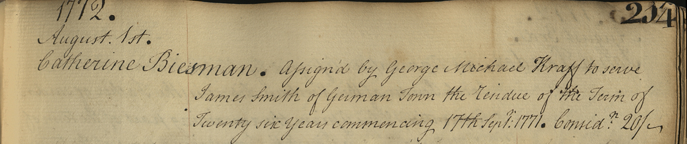
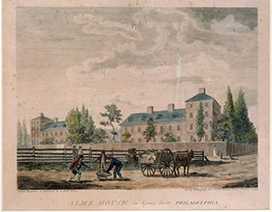

Length of Indenture
One critical piece of information included in the Record of Indentures volume was the length of the contract each person was to serve. In essence, servants and apprentices were giving control over their lives to their masters for a number of years. For the period of their contract, they could not marry, vote, or earn other income. It was therefore very important that the length of each contract was noted accurately.1
The Story of Catherine Biesman

{kind=link}
{kind=link}

{kind=link}
A later record can be found for Catherine which states that in 1790 her contract was transferred back to George Michael Kraft. This time she would reside in the Northern Liberties and learn "Housewifery, to read in the bible, to write a legible hand, to sew plain work." Here, we also find a clue that might explain the length of her indenture. Catherine is described as "a mulatto," a term in common usage in the 18th Century and one that illuminates the inherently racialised structure of society at the time. Commonly, people of color were forced to enter into longer contracts of indentured servitude.3
Next Topic About this Data
- 1. Data note: Time was calculated for each indenture recorded in the volume as a fraction of years. Some individuals have multiple records which, it must be acknowledged, may skew the proportional data calculations.
- 2.Smith, Billy G. "INDENTURES & Apprentices MADE BY Philadelphia OVERSEERS OF THE POOR, 1751-1799"
- 3. Richard Veit and David Orr, Historical Archaeology of the Delaware Valley, 1600-1850 (Univ. of Tennessee Press, 2014). p.260.